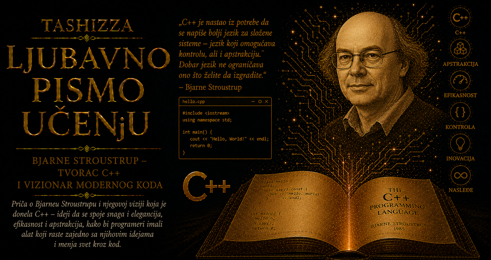

Ljubavno pismo učenju

Iza jezika C++ nalazi se životna priča čoveka koji je uporno pokušavao da pomiri osobine koje su drugima izgledale nespojivo: matematičku jasnoću i praktičnu upotrebljivost, bogatstvo apstrakcije i štedljiv odnos prema resursima, slobodu programera i odgovornost za posledice svake tehničke odluke. Bjarne Stroustrup decenijama je objašnjavao paradoks sopstvenog dela: jezik stvoren da ljudima pomogne u upravljanju složenošću s vremenom je i sam postao izuzetno složen. Ta protivrečnost nije za njega predstavljala razlog za odustajanje, već trajan poziv da se razlikuju površinska jednostavnost i ona dublja, koja čoveku omogućava da veliku zamisao izrazi jasno i sprovede je bez nepotrebnog rasipanja.
Rođen je 30. decembra 1950. godine u Arhusu, danskom lučkom i univerzitetskom gradu, a prve dvadeset tri godine života proveo je u radničkoj četvrti, u stambenom bloku sa zajedničkim dvorištem. Otac mu je postavljao podove, a kasnije radio kao bolnički nosač i pomoćni radnik, dok je majka bila sekretarica i imala više formalnog obrazovanja od članova prethodnih porodičnih generacija. U kući nije postojala akademska tradicija koja bi dečaku unapred odredila put prema univerzitetu. Postojali su rad, urednost, praktične veštine, štedljivost i saznanje da se sigurnost gradi strpljenjem.
Škola koju je pohađao nije pripadala povlašćenim mestima danskog obrazovanja; kasnije je saznao da je prema tadašnjim merilima bila najlošije rangirana u gradu. Ipak, uspeo je da nastavi školovanje u gimnaziji, a zatim da stigne do Univerziteta u Arhusu. Njegova mladost nije ličila na legendu o čudu od deteta koje od prvog dana zna šta će postati. Privlačili su ga istorija, arhitektura, sociologija i inženjerstvo, jer je u svakoj od tih oblasti prepoznavao drugačiji način razumevanja sveta koji ljudi zajednički grade.
Razmišljao je o studijama inženjerstva u Kopenhagenu, ali bi život u glavnom gradu porodici skromnih mogućnosti doneo ozbiljno finansijsko opterećenje. Ostao je u Arhusu i upisao matematiku, oblast u kojoj je bio uspešan i koja mu je ostavljala dovoljno širok prostor za kasniji izbor. Odluka delimično oblikovana ekonomskim ograničenjem odvela ga je prema računarstvu, koje je na univerzitetima upravo dobijalo jasniji akademski identitet. U toj ranoj raskrsnici već se može prepoznati jedna od njegovih trajnih osobina: sposobnost da ograničenje pretvori u polazište za stvaranje, umesto u opravdanje za odustajanje.
Programiranjem se počeo baviti na velikim institucionalnim računarima čije su mogućnosti bile skromne u poređenju sa današnjim uređajima, dok su vreme obrade i raspoloživa memorija predstavljali dragocene resurse. Programi su se unosili preko bušenih kartica ili terminala, a greška je mogla značiti dugo čekanje do sledećeg pokušaja. Takvo okruženje razvijalo je pažnju koju savremeni obilni računarski kapaciteti lako prikriju. Svaki bajt imao je težinu, svaka operacija cenu, a razlika između elegantne ideje i korisnog programa videla se tek kada bi računar tu ideju zaista pokušao da izvrši.
Tokom studija istraživao je veliki broj programskih jezika i rano naučio da usvajanje novog jezika zahteva više od pamćenja njegove sintakse. Kada je jedan program napisao u jeziku SNOBOL razmišljajući kao da još koristi ALGOL, dobio je neprirodno, sporo i teško razumljivo rešenje. Tek kada je proučio način mišljenja svojstven novom jeziku, program je dobio jednostavniji oblik. To iskustvo ostalo je utkano u njegovu kasniju filozofiju: programski jezik korisniku nudi pojmove kroz koje vidi problem, pa pravo učenje započinje onda kada čovek dopusti novim pojmovima da promene njegove stare navike.
Na Univerzitetu u Arhusu radio je i sa jezikom BCPL, prethodnikom jezika C, koji je osmislio Martin Richards. U jednom studentskom projektu napravio je mikrokod zahvaljujući kojem je BCPL-ov posredni kod mogao da se izvršava gotovo neposredno u hardveru. Takav rad vodio ga je mnogo dublje od same sintakse programskog jezika: pratio je čitav put kojim ljudska zamisao prolazi dok se ne pretvori u procesorske instrukcije. Visoki nivo apstrakcije i fizički rad mašine za njega su od tada predstavljali povezane slojeve jedne iste stvarnosti.
Godine 1975. završio je studije matematike i računarstva u Arhusu, a zatim otišao na Univerzitet u Kembridžu, u Churchill College, gde je započeo doktorat iz distribuiranih sistema. Za mladića iz porodice bez univerzitetske prošlosti taj prelazak predstavljao je mnogo više od promene obrazovne ustanove. Kembridž ga je uveo u sredinu u kojoj su pioniri računarstva bili živi sagovornici, a visoka intelektualna merila deo svakodnevice. Boravak među ljudima koji su teške probleme rešavali mirno i temeljno podigao je njegova očekivanja od sopstvenog rada.
Doktorski mentor David Wheeler, jedan od pionira ranog programiranja i čovek povezan sa istorijom računara EDSAC, podučavao ga je kroz zahtevan oblik poverenja. Kada je mladi doktorand pitao šta treba da radi, Wheeler mu je objasnio da upravo samostalno otkrivanje problema predstavlja važnu razliku između magistarskog i doktorskog rada. Njihovi razgovori bili su kratki i intenzivni, posle čega je Stroustrup dobijao vreme da sam razmišlja, istražuje i pogreši. Mentorstvo mu je tako pokazalo da pravi autoritet može podstaći čovekovu samostalnost, postaviti visoku meru i ostaviti dovoljno prostora da učenik do te mere doraste vlastitim naporom.
Druga važna ličnost bio je Roger Needham, stručnjak za računarske sisteme i bezbednost, čiji je način razmišljanja bio življi i razgovorniji. Needham je često raspravljao hodajući, pa je Stroustrup naučio da zauzme mesto kraj ugla prostorije kako se ne bi neprekidno okretao prateći njegovo kretanje. Tehnički razgovori nastavljali su se tokom ručkova, a ideje su sazrevale kroz pitanja, protivljenja, humor i zajedničko traganje. Wheeler i Needham pokazali su mu dve dopunjujuće strane učenja: samoću duboke koncentracije i stvaralačku snagu razgovora u kojem nijedan učesnik nema unapred pripremljen konačan odgovor.
Tokom doktorskog rada proučavao je komunikaciju u distribuiranim sistemima, gde više procesa istovremeno razmenjuje poruke i reaguje na promene ili kvarove. Za simulacije je koristio jezik Simula, delo norveških naučnika Ole-Johana Dahla i Kristena Nygaarda. Simuline klase omogućile su mu da o procesima, porukama i redovima čekanja razmišlja kao o jasno oblikovanim učesnicima sistema, umesto kao o rasutim brojevima, adresama i procedurama. Njena izražajnost otvorila mu je pogled na program kao na model sveta, ali su tadašnje implementacije bile prespore za pojedine vrste sistemskog rada.
BCPL i kasnije C pružali su mu efikasnost i neposrednost, dok je Simula nudila moćnije apstrakcije. Između tih iskustava oblikovalo se pitanje koje će ga pratiti decenijama: zbog čega bi programer morao da bira između jasnoće i brzine? Stroustrup nije prihvatio taj izbor kao nepromenljiv zakon prirode. U njemu je video tehnički problem koji vredi istraživati, i upravo će ta spremnost da odbije prividno neizbežan kompromis dovesti do stvaranja jezika C++.
Po završetku doktorata 1979. godine pridružio se Istraživačkom centru za računarske nauke u Bellovim laboratorijama, u Murray Hillu u Nju Džerziju. Stigao je u sredinu u kojoj su već nastali tranzistor, teorija informacija, Unix i jezik C, a hodnicima su se kretali Dennis Ritchie, Brian Kernighan i drugi ljudi čiji su alati preoblikovali računarstvo. Kada je pitao čime bi trebalo da se bavi, dobio je odgovor karakterističan za tamošnju kulturu: neka uradi nešto zanimljivo. Iza te prividne ležernosti nalazila se velika odgovornost — institucija mu je poverila slobodu, očekujući da sam pronađe problem dostojan njenog vremena i sredstava.
Bellove laboratorije pružile su mu okruženje u kojem inovacija nije nastajala kao usamljeni bljesak, nego kroz blizinu izuzetnih ljudi, otvorene tehničke rasprave i stalno proveravanje ideja na stvarnim sistemima. Stroustrup je poštovao jezik C i rad njegovih tvoraca, pa nije želeo da izgradi novi svet rušenjem postojećeg. Njegova zamisao bila je pragmatičnija i istovremeno ambicioznija: sačuvati C-ovu efikasnost, prenosivost i sposobnost rada blizu hardvera, a zatim mu pridružiti Simulinu moć oblikovanja složenih pojmova.
Projekat „C sa klasama” započeo je kao alat potreban njegovom istraživanju, a rastao je kroz neposrednu upotrebu unutar Bellovih laboratorija. Stroustrup je posmatrao kako programeri koriste nove mogućnosti, gde greše, koje ideje pokušavaju da izraze i na kojim mestima ih jezik primorava da se vrate zamršenijim rešenjima. Njegov pristup nije potiskivao teoriju, ali je od svake teorijske zamisli zahtevao da izdrži susret sa ograničenom memorijom, različitim računarima, starim bibliotekama, rokovima i ljudima koji su već godinama ulagali trud u postojeći kod.
Prvi prevodilac, nazvan Cfront, pretvarao je novi jezik u običan C, zahvaljujući čemu je mogao da koristi već rasprostranjene prevodioce i stigne do velikog broja računarskih platformi. U tom rešenju ogleda se Stroustrupov odnos prema napretku. Tehnička novina dobija punu vrednost kada ume da razgovara sa svetom koji zatiče, zaštiti ono što već dobro funkcioniše i omogući ljudima da novu mogućnost usvajaju postepeno. Čist početak može biti privlačan na papiru, dok se veliki sistemi, ustanove i zajednice gotovo uvek menjaju korak po korak.
Ime C++ pojavilo se 1983. godine na predlog saradnika Ricka Mascittija. Oznaka ++ u C-u uvećava vrednost promenljive, pa je predstavljala duhovitu sliku jezika koji nastavlja razvoj svog prethodnika. Ime je ubrzo izazvalo programerske šale da bi ++C bilo preciznije, jer izraz C++ najpre vraća prethodnu vrednost, pa je tek zatim uvećava. Stroustrup je prihvatao takve dosetke kao deo kulture zajednice koja je prema njegovom jeziku retko bila ravnodušna: C++ je od početka izazivao oduševljenje, otpor, poštovanje i rasprave podjednako snažnog intenziteta.
Objavljivanjem knjige The C++ Programming Language 1985. godine Stroustrup je uz uloge projektanta i implementatora preuzeo i ulogu učitelja. Morao je da objasni kako jezik radi, zbog čega su određene odluke donesene i kakav stil programiranja njegove mogućnosti čini korisnim. Malo je stvaralaca koji istovremeno razvijaju ideju, grade alat kojim će je proveriti, pišu dokumentaciju koja je čini dostupnom drugima i godinama učestvuju u raspravama o njenim granicama. Stroustrupova izdržljivost počivala je upravo na tom spoju stvaranja, proveravanja, objašnjavanja i slušanja iskustava korisnika.
U tehničkim razgovorima umeo je da bude neposredan, istrajan i vrlo precizan. Popularnost neke tvrdnje nije za njega predstavljala dokaz njene ispravnosti, niti je prijatna formulacija mogla da zameni valjano obrazloženje. Istovremeno je razumeo da programski jezik sa milionima korisnika ne može ostati lični umetnički predmet svog tvorca. Potrebe inženjera telekomunikacija, autora igara, naučnika, stručnjaka za finansijske sisteme i tvoraca ugrađenih uređaja međusobno su se razlikovale, pa je razvoj jezika zahtevao stalno usaglašavanje izražajne moći, razumljivosti, efikasnosti i kompatibilnosti.
Saradnja sa Aleksandrom Stepanovom i prihvatanje Standardne biblioteke šablona pokazali su Stroustrupovu sposobnost da prepozna ideju koja njegovom jeziku otvara neočekivani pravac. Stepanov je generičko programiranje gradio iz matematičkog proučavanja algoritama, tražeći zajedničku strukturu iza naizgled različitih postupaka. Njih dvojica nisu polazila iz potpuno istog ugla, ali su delila uverenje da dobra apstrakcija može istovremeno biti opšta, razumljiva i efikasna. C++ je tim susretom dobio biblioteku koja je promenila način na koji programeri povezuju algoritme i strukture podataka.
Važan saradnik bio je i Andrew Koenig, pažljiv istraživač programskih jezika sa kojim je Stroustrup godinama razmatrao pojedinosti C++ i kasnije napisao knjigu Accelerated C++. Njihov zajednički rad podseća da veliki tehnički sistemi rastu kroz mnoštvo razgovora, sporova, eksperimenata i ispravki. Iako istorija radi preglednosti često vezuje jedan jezik za jedno ime, razvoj C++ obuhvatao je zajednicu tvoraca prevodilaca, biblioteka, standarda i obrazovnih materijala. Stroustrupov doprinos bio je presudan, ali je i sam isticao da dugovečan jezik mora prerasti svog prvog autora.
Posle dugog rada u Bellovim laboratorijama i njihovim naslednim organizacijama, Stroustrup je 2002. godine postao profesor na Teksaškom univerzitetu A&M, gde je nastavio istraživački i obrazovni rad. Kasnije je radio u Morgan Stanleyju, povezujući teoriju programskih jezika sa zahtevima velikih industrijskih sistema, a zatim se pridružio Univerzitetu Kolumbija kao gostujući profesor. Njegova karijera ne razdvaja univerzitet i industriju na dva zatvorena sveta: ideje su za njega dobijale punu vrednost kada se proveravaju u stvarnim programima, dok je praksa napredovala onda kada je bila oslonjena na duboko razumevanje pojmova.
Posebnu pažnju posvetio je obrazovanju novih programera. U knjizi Programming: Principles and Practice Using C++ polazi od uverenja da početnike treba učiti ozbiljnom mišljenju, jasnom oblikovanju problema i odgovornosti za kvalitet programa. Programiranje za njega predstavlja mnogo više od slaganja naredbi koje računar prihvata. Ono zahteva sposobnost da se problem rastavi, pronađu odgovarajući pojmovi, zaštite važne pretpostavke i napravi rešenje koje će moći da razume i sledeći čovek koji ga bude čitao.
Stroustrup se dugo protivio predstavi programera kao usamljenog čarobnjaka koji vrednost dokazuje količinom zagonetnog koda. Veliki softver nastaje u timovima i nadživljava svoje prve autore, pa jasnoća predstavlja oblik obzira prema saradnicima i budućim održavaocima sistema. Dobar kod čuva tragove promišljanja, otvoreno pokazuje svoje namere i smanjuje broj pojedinosti koje svaki član tima mora istovremeno da drži u glavi. Učenje jezika zato obuhvata i učenje saradnje, jer tehnička briljantnost gubi veliki deo vrednosti kada iza sebe ostavlja nerazumljiv sistem.
Brojna priznanja koja je dobio, među kojima su nagrade i članstva uglednih inženjerskih i računarskih organizacija, potvrđuju izuzetan uticaj njegovog rada. Ipak, njegovo najdublje nasleđe teško je svesti na medalje ili počasna zvanja. Ono se nalazi u generacijama programera koje su naučile da apstrakcija može biti precizna, da efikasnost ne zahteva odricanje od jasnih pojmova i da se odgovornost za resurse može ugraditi u samu arhitekturu programa.
Stroustrupova priča nosi i važnu pouku o učenju: vredan put često započinje pitanjem koje niko nije uspeo u potpunosti da reši, a ne gotovim odgovorom koji treba poslušno ponoviti. Od škole bez naročitog ugleda i porodice bez akademske tradicije stigao je do Kembridža i Bellovih laboratorija, a zatim stvorio jezik koji je uticao na čitavu digitalnu civilizaciju. Na tom putu nije napustio svest o ograničenim resursima, niti poštovanje prema onome što su drugi već izgradili. Upravo su mu ta iskustva pomogla da razume kako velika novina može nastati iz pažljivog spajanja postojećih ideja.
Njegova potraga za moćnom jednostavnošću ostaje otvorena, jer nijedan dugovečan programski jezik ne može zauvek ostati jednostavan na isti način. Svet mu neprestano donosi nove procesore, bezbednosne zahteve, načine paralelnog rada i sisteme čiji tvorci nisu mogli predvideti sve buduće namene. Stroustrupovo delo zato ne obećava savršenstvo, već podstiče intelektualnu disciplinu: nauči dovoljno duboko da razlikuješ suštinsku složenost problema od složenosti koju si sam uneo, poštuj cenu svake apstrakcije i ostavi iza sebe rešenje koje će drugom čoveku pomoći da misli jasnije.